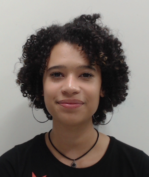

Meu nome é Letícia de Araújo Leal, tenho 21 anos e sou natural de Vinhedo-SP.
Meu desejo pela área de Tecnologia da Informação começou após um técnico "acidental" feito em 2015. Eu chamo de acidental, pois eu imaginava que era um curso voltado para pacote office e afins.
Após terminar o técnico, eu acabei seguindo para outras áreas, mas o desejo de voltar e seguir carreira foi mais forte.

"Sou a Bianca, tenho 20 anos e moro há 6 anos em Valinhos/SP.
Sempre fui fascinada pela grandeza e potência do chamado Universo Expandido da Tecnologia.
E desde 2018, depois da conquista de estudar em uma federal, venho me encontrando e sentindo prazer dentro da área."